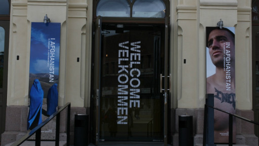
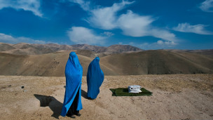
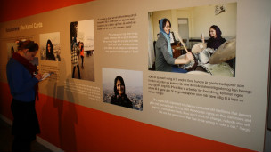

پذيرش > اخبار > رویای دختران دوربین به دست افغان


 رویای دختران دوربین به دست افغان رویای دختران دوربین به دست افغان
27 خرداد 1391 - - نسخه قابل چاپ
بی بی سی: این روزها، عمارت محل برگزاری اهدای جوایز صلح نوبل در شهر اسلو، پذیرای تصاویر عصیان زنان و مردانی است که سرزمینی به نام افغانستان، عامل همنشینی قاب هاشان در کنار هم شده است.
این تصاویر که در مجموعه ای با عنوان "در افغانستان " گرد هم آمده اند، به دو عکاس سرشناس بریتانیایی و آمریکایی تعلق دارند و برای نخستین بار است که در معرض دید عموم قرار می گیرند.
نخست عکاس آمریکایی، طغیان پوشیده ای زنانی را به تصویر می کشد که شوری گاه پنهان و گاه آشکار برای شورش دارند و بهای رهایی صدای درونشان را گاه چه غم انگیز می پردازند.
این عکاس خبری در سال ۲۰۰۰ برای اولین بار زمانی که افغانستان توسط رژیم طالبان اداره می شد، به این کشور سفر کرد و این سفر آغازی شد برای دیدار هر ساله وی از افغانستان.
دستاورد او از این سفرهای یازده ساله پر مخاطره، گنجینه ای از تصاویر رنج مردمی شد در نقطه ای از شرق که هنوز برای عموم جهانیان ناشناخته مانده است.
"لینزی آداریو" با نشریات معتبری از جمله نیویورک تایمز، نشنال جیوگرافی و نیوزویک همکاری می کند.
مجله ای نیوزویک در سال ۲۰۱۱، "لینزی آداریو" را به عنوان یکی از ۱۵۰ زنی انتخاب کرد که جهان را تکان دادند.
وی به همراه گروه خبری نیویورک تایمز، به خاطر گزارش "سرزمین طالبان" که در سپتامبر ۲۰۰۸ منتشر شد، جایزۀ پولیتزر سال ۲۰۰۹ را دریافت کرد.
آداریو سعی در شناساندن هرچه بیشتر ویژگی های مختلف سرزمین های خاورمیانه و آفریقا به جهان غرب دارد.
او همچنین در پوشش اخبار و تصاویر مربوط به بحران جنگ در کشورهایی چون افغانستان، لبنان، عراق و کنگو بسیارفعال بوده است.

در مسیرعبور
آنچه در عکس های لینزی آداریو، به عنوان عنصری ویژه خودنمایی می کند، عنصر رنگ است.
رنگ هایی که گویی با نشاط خود، مصرانه می کوشند از افسردگی ناشی از وضعیت تحمیل شده بر زنان و دختران افغان بکاهند.
در اکثر این قاب ها، حجم نگاهی بر عناصر درون قاب سنگینی می کند؛ نگاهی که در چالش با سنت است و رو به سوی مدرنیته دارد.
همچنین این میل پیش رونده در نوع چینش قاب ها در فضای نمایشگاه نیز به شکلی هوشمندانه مشهود است.
در آغاز ورود، مخاطب با تصویری از دو زن سراپا پوشیده روبرو می شود.
این گونه است که جوشش پنهان طغیان، از این تصویر آغاز شده و به آرامی در سرتاسر قاب های بعدی انعکاس می یابد.
این عبور از سنت های کهنه و دست و پاگیر و محدودیت های حاکم بر جنس زن در جامعه افغانستان، از تصاویر زنان محجبه و پوشیده در برقع شروع شده و هرچه پیش می رویم، از حجم این محدودیت ها - چه به لحاظ بیرونی و ملموس، مثل پوشش زنان و محیط فقر زده، و چه به شکل درونی تر مانند نوع فعالیت افراد - کاسته می شود؛ و به تصاویری از زنان و دخترانی می رسیم که درگیر فعالیت های اجتماعی مدرن اند.
زنان پزشک که در حال جراحی و مداوای بیماران اند، رانندگی می کنند، به ورزش بوکس مشغول اند، ساز می زنند یا سرگرم ساختن ویدئو و فیلم از زندگی خودشان اند.
گاهی اما این حرکت به سمت مدرن شدن، تلفات جبران ناپذیری برای این زنان دارد.
گویی این زنان برای به دست آوردن چیزی باید هزینه سنگینی بپردازند و از داشتن چیزی دیگر محروم شوند.
برخی از آنان دیگر هیچ گاه نمی توانند به گونه ای کامل کام دل یابند.
در میان این تصاویر، تصویر دخترکی را می بینیم که برای بهره بردن از سواد خواندن و نوشتن، زیبایی خود را از دست داده است.
این دختر دانش آموز، یکی از قربانیان حادثۀ اسید پاشی به دختران دانش آموز مدرسه میرویس در قندهار توسط نیروهای طالبان است که مخالف ادامۀ تحصیل دختران اند.
یا زن جوان بازیگری را می بینیم که می گوید به خاطر ادامه فعالیت هنری اش از شوهرش جدا شده و اکنون به همین دلیل هم نمی تواند با کسی که هم اکنون دلبستۀ اوست، ازدواج کند.

زنانی در سودای تغییر
در کنار این عکس ها، ویدیوهایی هم به نمایش گذاشته شده که توسط چند دختر افغان به وسیله گوشی های تلفن همراهشان گرفته شده؛ دخترانی که با فن آوری جدید آشنا هستند و با استفاده از آن سعی دارند دنیا و برداشتهای خود را به نمایش بگذارند.
یکی از این دختران که "صدف" نام دارد می گوید "ما دختران افغانستان، جلسات شعر و کنسرت موسیقی می گذاریم و وقتی کنار هم هستیم جوک می گوییم، شوخی می کنیم و از خودمان ویدئو تهیه می کنیم تا بتوانیم همیشه به یاد بیاوریم که چه لحظات خوبی با هم داشته ایم."
دختر دیگری به نام " سحر" می گوید "من انگشت نما شده ام، چون دختری فعال هستم، وقتی بیرون می روم، مردم حرف های خوبی درباره من نمی زنند اما من به قدرت زنانه خود ایمان دارم و برای مساوات جنسی مبارزه می کنم و مطمئن هستم ما دختران می توانیم در وضعیت خودمان تغییر ایجاد کنیم."
او اضافه می کند "قبل از اینکه کار با دوربین را آغاز کنم فکر می کردم همه چیز باید شکلی رسمی داشته باشد، ولی وقتی از خودم فیلم گرفتم فهمیدم همه چیز فرق دارد، این کار به من امید می دهد و الهام بخش من در حل مشکلات است."
دختر دیگری به نام ’نرگس’ می گوید "من با دوربین ویدئویی ام احساس قدرت می کنم. وقتی پسران در خیابان مرا اذیت می کنند، دوربین ام را نشانشان می دهم و می گویم ویدئوی شما را به ایستگاه تلویزیون می فرستم تا خانواده های شما ببینند که چگونه دختران مردم را اذیت می کنید."
این دختر جوان افغان می گوید "اگر ما نتوانیم جامعه مان را تغییر دهیم پس که خواهد توانست؟ ما نسلی هستیم که باید دست به خطر بزنیم."
ارسال به
بالاترین
،
توییتر
،
فریندفید
،
فیسبوک
در همين بخش :
 پروین ذبیحی برنده جایزه حقوق بشری سازمان غيردولتى اتريشى سودويند شد پروین ذبیحی برنده جایزه حقوق بشری سازمان غيردولتى اتريشى سودويند شد
پخش کارت پستال و بروشور در روز جهانی زن در تهران
تمدید زمان برای امضای بیانیهی جمعی از فعالان زن به مناسبت هشت مارس
مجوزی که در نطفه خفه شد
بیش از 2000 امضا در اعتراض به تبعیض های آموزشی به مجلس تحویل داده شد
ديگر بخش ها :
طرح یک میلیون امضا
|
مقالات
|
سایت نوشته ها
|
اخبار
|
گزارش كمپين
|
گفت و گو
|
علیه سکوت
|
كوچه به كوچه
|
نامه های شما
|
گزارش ویژه
|
گفتگو با اعضا
|
ویژه سالگرد کمپین
|
تصویر برابری
|
دل آرام علی
|
تریبون
|
مقالات
|
تاریخ شفاهی
|
خارج از چارچوب
|
کتابخانه
|
درباره کمپین
|
کمپین در شهرها
|
کمپین در بند
|
صدای تغییر
|
ویژه 22 خرداد
|
لایحه حمایت از خانواده
|
گالری
|
عشا مومنی
|
امیر یعقوبعلی
|
خدیجه مقدم
|
راحله عسگری زاده و نسیم خسروی
|
پروین اردلان،جلوه جواهری، مریم حسین خواه، ناهید کشاورز
|
زینب پیغمبرزاده
|
سعیده امین، سارا ایمانیان، محبوبه حسین زاده، ناهید کشاورز و همایون نامی
|
احترام شادفر
|
نسیم سرابندی زاده،فاطمه دهدشتی
|
وبلاگ مهمان
|
پرونده خرم آباد
|
دستگیری ها
|
مریم مالک
|
پرستو اللهیاری
|
مهرنوش اعتمادی
|
سمیه رشیدی
|
Other Languages
|
همراهان
|
«فراخوان کمپین ده روز با بهاره هدایت»
| English
|